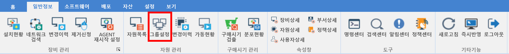
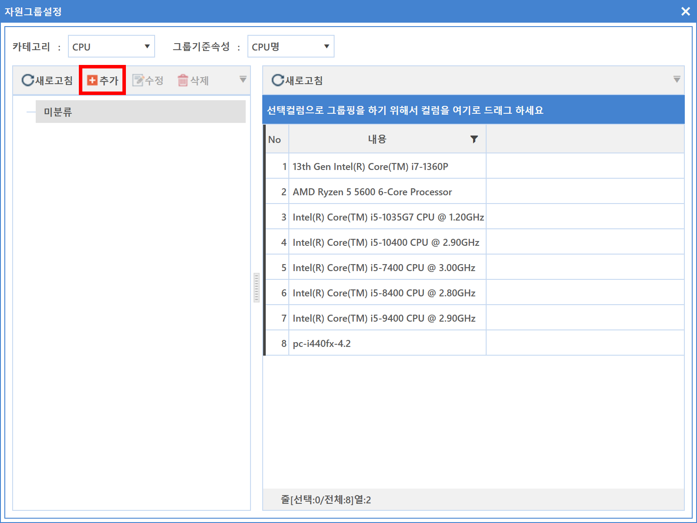
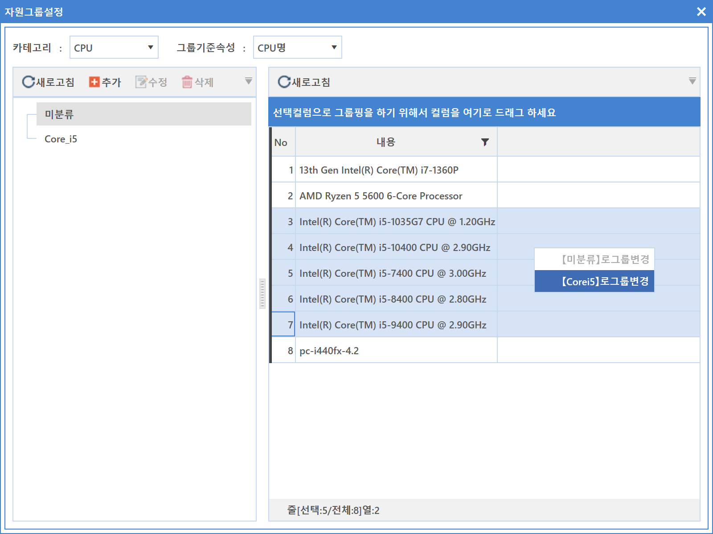

4-2-2. 그룹설정
4-2-2. 그룹설정
Source: https://www.sweeper.or.kr/etc/manual/422.html
4-2-2. 그룹설정
4. 일반정보 ›› 4-2. 자원 관리 ››


자원정보를 카테고리, 속성 별로 그룹화하여 보고서에서 활용할 수 있습니다. 종류가 다양한 장치들을 관리자가 적절한 그룹을 생성하고, 이를 보고서에서 출력할 수 있도록 하였습니다.

설정방법
- 카테고리에서 대상 장치를 선택합니다.
- 그룹기준속성에서 필요한 속성을 선택합니다.
-
미분류 그룹핑이 기본이며, 그룹을 추가하려면 추가버튼을 클릭합니다.
 -
새그룹으로 생성되며, 수정버튼을 클릭하면 그룹명 변경이 가능합니다.
-
그룹명 생성 완료 후 미분류를 선택하면 우측에 장치들이 표시되며 그룹핑할 대상 장치를 찾아 마우스 우클릭하여 해당 그룹을 선택합니다.
 -
생성된 그룹을 선택하면 해당 장치가 그룹에 포함된 것을 확인할 수 있습니다.

그룹 내용 확인
- 보기 메뉴에서 보고서를 클릭하여 하드웨어 현황 보고서에서 확인할 수 있습니다.

- 부서와 카테고리, 그룹기준 속성을 설정하고 보고서 출력 버튼을 클릭하면 결과를 조회할 수 있습니다.

참고사항
본 메뉴에서는 프린트 기능이 제공되지 않습니다.
© Copyright SWeeper Inc.. All Rights Reserved